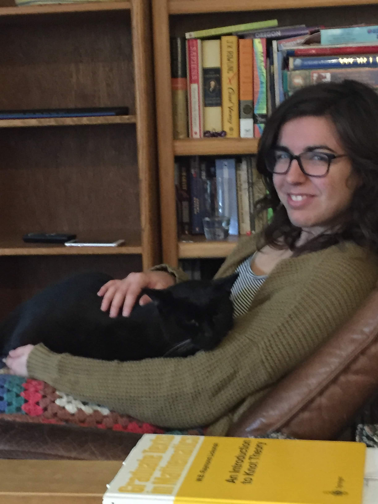

When I'm not doing math, I enjoy movies, swimming, playing games, drawing, and painting.
For example, I drew the background for this website in Inkscape.
I also love making hexaflexagons, taking care of my many houseplants, and spending time with my fellow math graduate students!
Feel free to speak to me in Spanish anytime. I'm always thrilled to speak Spanish.
Also feel free to speak to me in Mandarin Chinese, but I probably won't understand that much of what you say (I'm working on it).
Below is a picture of me visiting my childhood cat, Blackberry (and my family) over winter break 2019-2020. In this image you can see An Introduction to Knot Theory by W.B. Raymond Lickorish, which did not leave my side.
